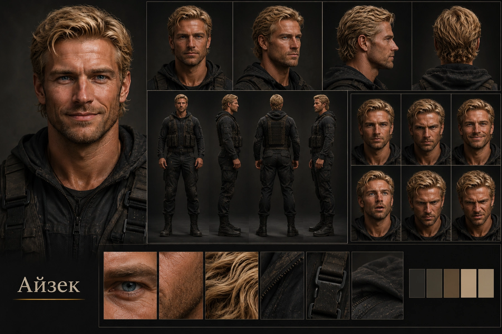

ОСНОВНА ІНФОРМАЦІЯ
Міжпланові переходи та дослідження
Айзек — характерник Нульового плану. Він організовує переходи між світами, готує учасників експедицій і супроводжує їх під час досліджень. Перед переходом Айзек докладно пояснює можливості та обмеження скафандрів, звертає увагу на ризики й нагадує головне правило: терпіння та обережність, навіть коли все здається знайомим.
Статус: характерник Нульового плану
Спеціалізація: міжпланові переходи та дослідження світів
Зовнішність: блондин, блакитні очі, легка щетина — відповідно до затвердженого образу
Вік: у перевірених рукописах не зазначений
ДЖО · ДОПОМОГА ТА ЕВАКУАЦІЯ
Майже двісті років дружби
Айзек знає Джо майже двісті років. Упродовж цього часу він привозив на його планету воду, ліки й обладнання, забирав хворих до медичних комплексів на лікування, а потім повертав їх додому. Закон трьох днів не дозволяв чужинцям залишатися на іншому плані довше: після цього людина мусила повернутися до рідного світу.
Після об’єднання характерників Нульового й Першого планів здібність переносити людей між планами назавжди стала доступною й нульовикам. Айзек отримав дозвіл на евакуацію та повернувся до Джо вже не з водою, а з можливістю забрати його назавжди. Разом із Джо він евакуював усіх мешканців планети — 103 людини — на планету-курорт.
ЕКСПЕДИЦІЇ
Підготовка та супровід переходів
Айзек проводить інструктажі для учасників експедицій. Він пояснює правила роботи зі скафандрами, їхні можливості й обмеження, а також потенційні небезпеки. Під час однієї з експедицій до нього приєднуються Дмитро, Найрін і Лейла. Для Лейли це перший перехід; її залучають до групи як медика, який уже знає Дмитра.
Айзек також організовує безпечні дослідження планів, що стали недоступними або небезпечними для звичайного відвідування. Для такої роботи команда підготувала захищений герметичний купол, звідки можна спостерігати за середовищем, не виходячи назовні.
ДОСЛІДЖЕННЯ ВІДДАЛЕНИХ ГІЛОК
Межа дев’ятого плану
Переглядаючи старі журнали експедицій, Айзек помічає, що маршрут, яким характерники раніше безперешкодно переходили з восьмого плану до дев’ятого, а звідти — до десятого, більше не працює. Він залишає човен біля планети восьмого плану й повторно перевіряє напрямок переходу. Дев’ятий план не здається повністю зниклим, однак простір між світами більше не дозволяє сформувати портал.
Коли дев’ятий план остаточно перестає існувати для характерників, Айзек залишається біля восьмого світу, щоб з’ясувати, що відбулося. Він запускає автоматичні супутники й орбітальні станції, вимірює гравітаційне поле планети, відстежує рух її природних супутників і порівнює результати різними методами. Дані не показують звичних ознак геологічного руйнування, але Айзек продовжує спостереження, не роблячи передчасних висновків.
ХАРАКТЕР І РОБОЧИЙ ПІДХІД
Уважність до деталей
У роботі Айзек не поспішає з висновками. Він повторює вимірювання, перевіряє сенсори, змінює методику й намагається спростувати власні припущення, перш ніж прийняти їх. Його поведінка в експедиціях підкреслює обережність, терпіння та відповідальність за людей, яких він супроводжує.